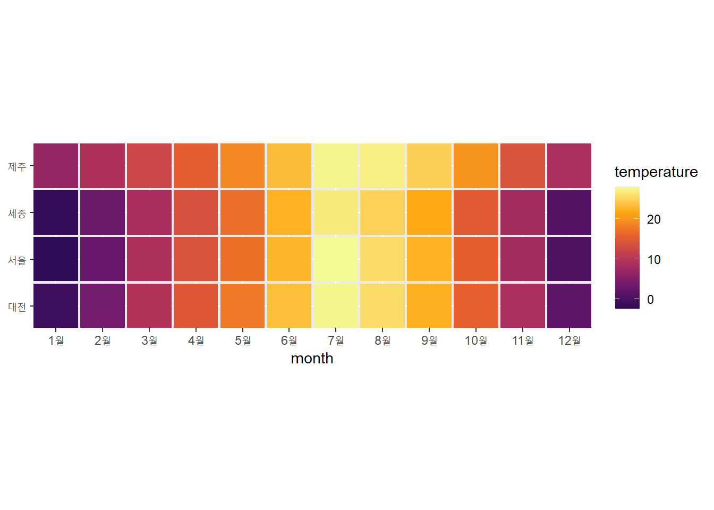

library(ggplot2)
library(dplyr)
#>
#> Attaching package: 'dplyr'
#> The following objects are masked from 'package:stats':
#>
#> filter, lag
#> The following objects are masked from 'package:base':
#>
#> intersect, setdiff, setequal, union|
|
|
|
Figure 2.3, Figure 2.4
데이터 시각화 실습 : 계절성 그래프 Figure 2.3, Figure 2.4
- 패키지 불러오기
- 파일 불러오기
- ncdc_normals.csv (날짜별 온도 등 데이터셋)
ncdc_normals <- read.csv('C:/Users/seong taek/Desktop/3-1 DataVisualize/data_visualize/ncdc_normals.csv')- 불러온 데이터셋 파악
# 차원 파악
ncdc_normals %>% dim()
#> [1] 2745366 6
# 앞부분 훑어보기
ncdc_normals %>% head()
#> station_id month day temperature flag date
#> 1 AQW00061705 1 1 82.4 C 0000-01-01
#> 2 AQW00061705 1 2 82.4 C 0000-01-02
#> 3 AQW00061705 1 3 82.4 C 0000-01-03
#> 4 AQW00061705 1 4 82.4 C 0000-01-04
#> 5 AQW00061705 1 5 82.4 C 0000-01-05
#> 6 AQW00061705 1 6 82.4 C 0000-01-06
# 통계 요약 정보
ncdc_normals %>% summary()
#> station_id month day temperature
#> Length:2745366 Min. : 1.000 Min. : 1.00 Min. :-21.80
#> Class :character 1st Qu.: 4.000 1st Qu.: 8.00 1st Qu.: 39.70
#> Mode :character Median : 7.000 Median :16.00 Median : 54.60
#> Mean : 6.514 Mean :15.76 Mean : 53.17
#> 3rd Qu.:10.000 3rd Qu.:23.00 3rd Qu.: 68.10
#> Max. :12.000 Max. :31.00 Max. :103.20
#> flag date
#> Length:2745366 Length:2745366
#> Class :character Class :character
#> Mode :character Mode :character
#>
#>
#>
# 각 컬럼 클래스(타입) 확인
ncdc_normals %>% sapply(class)
#> station_id month day temperature flag date
#> "character" "integer" "integer" "numeric" "character" "character"
# 각 컬럼 자료형 확인
ncdc_normals %>% sapply(typeof)
#> station_id month day temperature flag date
#> "character" "integer" "integer" "double" "character" "character"- character → date 형식 변환
ncdc_normals$date <- ncdc_normals$date%>% as.Date("%Y-%m-%d")
ncdc_normals %>% sapply(class)
#> station_id month day temperature flag date
#> "character" "integer" "integer" "numeric" "character" "Date"
ncdc_normals %>% sapply(typeof)
#> station_id month day temperature flag date
#> "character" "integer" "integer" "double" "character" "double"- station_id 종류 개수
ncdc_normals$station_id %>% unique() %>% length()
#> [1] 7501- station_id 선정 후, location(컬럼 이름) 지정한 data.frame 생성
station_loc <- data.frame(station_id = c("USW00014819","USC00042319","USW00093107","USW00012918"),
location = c("Chicago","Death Valley","San Diego","Houston"))
station_loc
#> station_id location
#> 1 USW00014819 Chicago
#> 2 USC00042319 Death Valley
#> 3 USW00093107 San Diego
#> 4 USW00012918 Houston- station_id로 ncdc_normals와 station_loc 두 컬럼을 inner_join
temps_long <- ncdc_normals %>% inner_join(station_loc, by="station_id")
temps_long %>% head()
#> station_id month day temperature flag date location
#> 1 USC00042319 1 1 51.0 S 0000-01-01 Death Valley
#> 2 USC00042319 1 2 51.2 S 0000-01-02 Death Valley
#> 3 USC00042319 1 3 51.3 S 0000-01-03 Death Valley
#> 4 USC00042319 1 4 51.4 S 0000-01-04 Death Valley
#> 5 USC00042319 1 5 51.6 S 0000-01-05 Death Valley
#> 6 USC00042319 1 6 51.7 S 0000-01-06 Death Valley
temps_long %>% dim()
#> [1] 1464 7
temps_long$date %>% class()
#> [1] "Date"- x축에 표시할 눈금 생성
# x축 범위 설정을 위해 date 범위 파악
temps_long$date %>% head()
#> [1] "0000-01-01" "0000-01-02" "0000-01-03" "0000-01-04" "0000-01-05"
#> [6] "0000-01-06"
temps_long$date %>% tail()
#> [1] "0000-12-26" "0000-12-27" "0000-12-28" "0000-12-29" "0000-12-30"
#> [6] "0000-12-31"
# 범위 설정
date_s <- '0000-01-01' %>% as.Date('%Y-%m-%d')
date_e <- '0001-01-01' %>% as.Date('%Y-%m-%d')
# data_s ~ date_e까지 3개월 단위로 나누기
break_date <- seq(date_s, date_e, by = '3 month')
break_date
#> [1] "0000-01-01" "0000-04-01" "0000-07-01" "0000-10-01" "0001-01-01"- Fiqure 2.3 ggplot + 축 설정
- 사용 데이터셋 : temps_long
- x=date, y=temperature
- color : location별
- scale_x_date
- 이름 : month
- 간격 : break_date (3개월)
- 간격 라벨 (Jan ~ Jan)
- scale_y_continuous
- 이름 : temp
- 범위 : 0 ~ 110
- labs : 제목, 부제목
- 테마 : 밝게
ggplot(temps_long, aes(x=date, y=temperature, color=location)) +
geom_line() +
scale_x_date(name = 'month',
breaks = break_date,
labels = c('Jan','Apr','Jul','Oct','Jan')) +
scale_y_continuous(name = 'temp', limits = c(0,110)) + # continuous 연속형 (온도)
#ylab('Temp') +
labs(title = 'Fig. 2.3', subtitle = 'Daily temperature normals') +
theme_light()- Figure 2.4 그래프 데이터셋 전처리
temps_long %>% head()
#> station_id month day temperature flag date location
#> 1 USC00042319 1 1 51.0 S 0000-01-01 Death Valley
#> 2 USC00042319 1 2 51.2 S 0000-01-02 Death Valley
#> 3 USC00042319 1 3 51.3 S 0000-01-03 Death Valley
#> 4 USC00042319 1 4 51.4 S 0000-01-04 Death Valley
#> 5 USC00042319 1 5 51.6 S 0000-01-05 Death Valley
#> 6 USC00042319 1 6 51.7 S 0000-01-06 Death Valley
temps_long %>% names()
#> [1] "station_id" "month" "day" "temperature" "flag"
#> [6] "date" "location"
mean_temps <- temps_long %>%
group_by(location, month) %>% # location, month로 그룹화
summarise(mean = mean(temperature)) %>% # 그룹화된 데이터의 집계값 요약
ungroup() %>% # 그룹화를 해제하여 일반적인 데이터 프레임 형태로 사용
mutate(month = factor(month %>% # month값을 factor 형태로 수정해서 원하는 levels 지정가능
paste(), levels = 1:12 %>% paste()))
#> `summarise()` has grouped output by 'location'. You can override using the
#> `.groups` argument.
mean_temps
#> # A tibble: 48 × 3
#> location month mean
#> <chr> <fct> <dbl>
#> 1 Chicago 1 24.8
#> 2 Chicago 2 28.9
#> 3 Chicago 3 38.8
#> 4 Chicago 4 50.4
#> 5 Chicago 5 60.9
#> 6 Chicago 6 71.0
#> 7 Chicago 7 75.8
#> 8 Chicago 8 74.1
#> 9 Chicago 9 66.4
#> 10 Chicago 10 54.3
#> # … with 38 more rows- Figure 2.4 ggplot + geom_tile + fill color
- 사용 데이터셋 : mean_temps
- x=month, y=location
- fill : mean
- geom_tile : 넓이, 높이 지정
- scale_fill_viridis_c
- 이름 : temperature
- 옵션 : B (밝기)
- begin, end : 색상의 시작,끝
- coord_fixed
- expand = F : 공백 제거
- ylab(NULL) : y축 이름 제거
ggplot(mean_temps, aes(x = month, y = location, fill = mean)) +
geom_tile(width = .95, height = 0.95) +
scale_fill_viridis_c(option = 'B', begin = 0.15, end = 0.98,
name = 'temperature') +
coord_fixed(expand = FALSE) +
ylab(NULL) #ylab('')예제 : 2021년 기상청 자료 Figure 2.3, Figure 2.4
- csv파일 불러오기, 데이터 파악
data_2021 <- read.csv('C:/Users/seong taek/Desktop/3-1 DataVisualize/data_visualize/OBS_ASOS_DD_20220308125952.csv', fileEncoding = 'cp949')
data_2021 %>% dim()
#> [1] 1460 6
data_2021 %>% head()
#> 지점 지점명 일시 평균기온..C. 최저기온..C. 최고기온..C.
#> 1 108 서울 2021-01-01 -4.2 -9.8 1.6
#> 2 108 서울 2021-01-02 -5.0 -8.4 -1.4
#> 3 108 서울 2021-01-03 -5.6 -9.1 -2.0
#> 4 108 서울 2021-01-04 -3.5 -8.4 0.3
#> 5 108 서울 2021-01-05 -5.5 -9.9 -2.1
#> 6 108 서울 2021-01-06 -7.4 -12.0 -1.9
data_2021 %>% sapply(class)
#> 지점 지점명 일시 평균기온..C. 최저기온..C. 최고기온..C.
#> "integer" "character" "character" "numeric" "numeric" "numeric"- 일시를 character → date형식으로 변환
data_2021$일시 <- data_2021$일시 %>% as.Date('%Y-%m-%d')
data_2021 %>% sapply(class)
#> 지점 지점명 일시 평균기온..C. 최저기온..C. 최고기온..C.
#> "integer" "character" "Date" "numeric" "numeric" "numeric"- 기초통계량 파악
data_2021 %>% summary()
#> 지점 지점명 일시 평균기온..C.
#> Min. :108.0 Length:1460 Min. :2021-01-01 Min. :-14.90
#> 1st Qu.:126.8 Class :character 1st Qu.:2021-04-02 1st Qu.: 7.90
#> Median :158.5 Mode :character Median :2021-07-02 Median : 15.00
#> Mean :166.0 Mean :2021-07-02 Mean : 14.77
#> 3rd Qu.:197.8 3rd Qu.:2021-10-01 3rd Qu.: 23.10
#> Max. :239.0 Max. :2021-12-31 Max. : 31.70
#> 최저기온..C. 최고기온..C.
#> Min. :-19.10 Min. :-10.70
#> 1st Qu.: 3.10 1st Qu.: 13.18
#> Median : 11.10 Median : 20.15
#> Mean : 10.69 Mean : 19.56
#> 3rd Qu.: 19.60 3rd Qu.: 27.70
#> Max. : 28.10 Max. : 36.50- x축에 표시할 눈금
data_2021$일시 %>% head()
#> [1] "2021-01-01" "2021-01-02" "2021-01-03" "2021-01-04" "2021-01-05"
#> [6] "2021-01-06"
data_2021$일시 %>% tail()
#> [1] "2021-12-26" "2021-12-27" "2021-12-28" "2021-12-29" "2021-12-30"
#> [6] "2021-12-31"
date_s <- '2021-01-01' %>% as.Date('%Y-%m-%d')
date_e <- '2022-01-01' %>% as.Date('%Y-%m-%d')
break_date <- seq.Date(date_s, date_e, by='3 month')
break_date
#> [1] "2021-01-01" "2021-04-01" "2021-07-01" "2021-10-01" "2022-01-01"
# 월만 문자 값으로 뽑아내기
date_lab <- format(break_date, '%B')
date_lab
#> [1] "1월" "4월" "7월" "10월" "1월"- Figure 2.3 ggplot + 축 설정
- 사용 데이터셋 : data_2021
- x=일시, y=평균기온..C.
- color : 지점명 별
- scale_x_date
- 이름 : 월
- 간격 : break_date (3개월)
- 간격 라벨 (1월 ~ 1월)
- scale_y_continuous
- 이름 : 평균기온
- labs : 제목, 부제목
- 테마 : 밝게
# 축 값 지정하기 전 컬럼이름 파악
data_2021 %>% names()
#> [1] "지점" "지점명" "일시" "평균기온..C." "최저기온..C."
#> [6] "최고기온..C."
ggplot(data_2021, aes(x=일시, y=평균기온..C., color=지점명)) +
geom_smooth(linewidth = 0.9,se=F,span=0.1) + # linewidth (선 두께), geom_line → smooth 가능
scale_x_date(name = '월', # se : 테두리, span : 스무스 정도
breaks = break_date,
labels = date_lab) +
scale_y_continuous(name = '평균기온') +
labs(title = '2021년 평균온도', subtitle = '4개의 주요 도시') +
theme_light()
#> `geom_smooth()` using method = 'loess' and formula = 'y ~ x'- Figure 2.4 그래프 데이터셋 전처리
data_2021 %>% names()
#> [1] "지점" "지점명" "일시" "평균기온..C." "최저기온..C."
#> [6] "최고기온..C."
data_2021 %>% head()
#> 지점 지점명 일시 평균기온..C. 최저기온..C. 최고기온..C.
#> 1 108 서울 2021-01-01 -4.2 -9.8 1.6
#> 2 108 서울 2021-01-02 -5.0 -8.4 -1.4
#> 3 108 서울 2021-01-03 -5.6 -9.1 -2.0
#> 4 108 서울 2021-01-04 -3.5 -8.4 0.3
#> 5 108 서울 2021-01-05 -5.5 -9.9 -2.1
#> 6 108 서울 2021-01-06 -7.4 -12.0 -1.9
data_2021_month <- data_2021 %>%
mutate(month = format(일시, '%B')) %>% # 일시에서 월만 뽑아낸 month 컬럼 생성
group_by(지점명, month) %>% # 지점명, month로 그룹화
summarise(mean = mean(평균기온..C.)) %>% # 그룹화된 데이터의 집계값 요약
ungroup() %>% # 그룹화를 해제하여 일반적인 데이터 프레임 형태로 사용
mutate(month = factor(month, # month값을 factor 형태로 수정해서 원하는 levels 지정가능
levels = paste(1:12, '월',sep = ''))) # sep='' : 간격없이 붙이기
#> `summarise()` has grouped output by '지점명'. You can override using the
#> `.groups` argument.
data_2021_month
#> # A tibble: 48 × 3
#> 지점명 month mean
#> <chr> <fct> <dbl>
#> 1 대전 10월 15.7
#> 2 대전 11월 8.91
#> 3 대전 12월 1.89
#> 4 대전 1월 -0.984
#> 5 대전 2월 3.99
#> 6 대전 3월 9.61
#> 7 대전 4월 14.7
#> 8 대전 5월 17.7
#> 9 대전 6월 23.5
#> 10 대전 7월 27.8
#> # … with 38 more rows- Figure 2.4 ggplot + geom_tile + fill color
- 사용 데이터셋 : data_2021_month
- x=month, y=지점명
- fill : mean(평균온도)
- geom_tile : 넓이, 높이 지정
- scale_fill_viridis_c
- 이름 : temperature
- 옵션 : B (밝기)
- begin, end : 색상의 시작,끝
- coord_fixed
- expand = F : 공백 제거
- ylab(NULL) : y축 이름 제거
ggplot(data_2021_month, aes(x = month, y = 지점명, fill = mean)) +
geom_tile(width = 0.95, height = 0.95) +
scale_fill_viridis_c(option = 'B', begin = 0.15, end = 0.98,
name = 'temperature') +
coord_fixed(expand = FALSE) +
ylab(NULL) #ylab('')
과제 : 2022년 기상청 자료 Figure 2.3, Figure 2.4
- csv파일 불러오기, 데이터 파악
data_2022 <- read.csv('C:/Users/seong taek/Desktop/3-1 DataVisualize/data_visualize/OBS_ASOS_DD_20230322080932.csv', fileEncoding = 'cp949')
data_2022 %>% dim()
#> [1] 2555 6
data_2022 %>% head()
#> 지점 지점명 일시 평균기온..C. 최저기온..C. 최고기온..C.
#> 1 108 서울 2022-01-01 -4.3 -10.2 2.3
#> 2 108 서울 2022-01-02 -1.3 -5.2 3.0
#> 3 108 서울 2022-01-03 -1.9 -8.0 2.5
#> 4 108 서울 2022-01-04 -2.5 -5.6 1.0
#> 5 108 서울 2022-01-05 -2.8 -7.8 1.9
#> 6 108 서울 2022-01-06 -2.2 -5.9 3.3
data_2022 %>% sapply(class)
#> 지점 지점명 일시 평균기온..C. 최저기온..C. 최고기온..C.
#> "integer" "character" "character" "numeric" "numeric" "numeric"
# 결측값 있는지 확인
sum(is.na(data_2022))
#> [1] 4
# 결측값 제거
data_2022 <- data_2022 %>% na.omit()- 일시를 character → date형식으로 변환
data_2022$일시 <- data_2022$일시 %>% as.Date('%Y-%m-%d')
data_2022 %>% sapply(class)
#> 지점 지점명 일시 평균기온..C. 최저기온..C. 최고기온..C.
#> "integer" "character" "Date" "numeric" "numeric" "numeric"- 기초통계량 파악
data_2022 %>% summary()
#> 지점 지점명 일시 평균기온..C.
#> Min. :108.0 Length:2552 Min. :2022-01-01 Min. :-11.80
#> 1st Qu.:133.0 Class :character 1st Qu.:2022-04-02 1st Qu.: 8.20
#> Median :185.0 Mode :character Median :2022-07-02 Median : 16.40
#> Mean :175.1 Mean :2022-07-01 Mean : 15.26
#> 3rd Qu.:189.0 3rd Qu.:2022-10-01 3rd Qu.: 23.00
#> Max. :239.0 Max. :2022-12-31 Max. : 32.20
#> 최저기온..C. 최고기온..C.
#> Min. :-13.80 Min. :-8.60
#> 1st Qu.: 4.20 1st Qu.:12.30
#> Median : 12.60 Median :20.70
#> Mean : 11.62 Mean :19.49
#> 3rd Qu.: 19.80 3rd Qu.:27.20
#> Max. : 28.90 Max. :37.50- x축에 표시할 눈금
data_2022$일시 %>% head()
#> [1] "2022-01-01" "2022-01-02" "2022-01-03" "2022-01-04" "2022-01-05"
#> [6] "2022-01-06"
data_2022$일시 %>% tail()
#> [1] "2022-12-26" "2022-12-27" "2022-12-28" "2022-12-29" "2022-12-30"
#> [6] "2022-12-31"
date_s <- '2022-01-01' %>% as.Date('%Y-%m-%d')
date_e <- '2023-01-01' %>% as.Date('%Y-%m-%d')
break_date <- seq.Date(date_s, date_e, by='3 month')
break_date
#> [1] "2022-01-01" "2022-04-01" "2022-07-01" "2022-10-01" "2023-01-01"
# 월만 문자 값으로 뽑아내기
date_lab <- format(break_date, '%B')
date_lab
#> [1] "1월" "4월" "7월" "10월" "1월"- Figure 2.3 ggplot + 축 설정
- 사용 데이터셋 : data_2022
- x=일시, y=평균기온..C.
- color : 지점명 별
- scale_x_date
- 이름 : 월
- 간격 : break_date (3개월)
- 간격 라벨 (1월 ~ 1월)
- scale_y_continuous
- 이름 : 평균기온
- labs : 제목, 부제목
- 테마 : 밝게
# 축 값 지정하기 전 컬럼이름 파악
data_2022 %>% names()
#> [1] "지점" "지점명" "일시" "평균기온..C." "최저기온..C."
#> [6] "최고기온..C."
ggplot(data_2022, aes(x=일시, y=평균기온..C., color=지점명)) +
geom_smooth(linewidth = 1.1,se=F,span=0.08) + # linewidth (선 두께), geom_line → smooth 가능
scale_x_date(name = '월', # se : 테두리, span : 스무스 정도
breaks = break_date,
labels = date_lab) +
scale_y_continuous(name = '평균기온') +
labs(title = '2022년 평균온도', subtitle = '7개 지점 관측') +
theme_light()
#> `geom_smooth()` using method = 'loess' and formula = 'y ~ x'- Figure 2.4 그래프 데이터셋 전처리
data_2022 %>% names()
#> [1] "지점" "지점명" "일시" "평균기온..C." "최저기온..C."
#> [6] "최고기온..C."
data_2022 %>% head()
#> 지점 지점명 일시 평균기온..C. 최저기온..C. 최고기온..C.
#> 1 108 서울 2022-01-01 -4.3 -10.2 2.3
#> 2 108 서울 2022-01-02 -1.3 -5.2 3.0
#> 3 108 서울 2022-01-03 -1.9 -8.0 2.5
#> 4 108 서울 2022-01-04 -2.5 -5.6 1.0
#> 5 108 서울 2022-01-05 -2.8 -7.8 1.9
#> 6 108 서울 2022-01-06 -2.2 -5.9 3.3
data_2022_month <- data_2022 %>%
mutate(month = format(일시, '%B')) %>% # 일시에서 월만 뽑아낸 month 컬럼 생성
group_by(지점명, month) %>% # 지점명, month로 그룹화
summarise(mean = mean(평균기온..C.)) %>% # 그룹화된 데이터의 집계값 요약
ungroup() %>% # 그룹화를 해제하여 일반적인 데이터 프레임 형태로 사용
mutate(month = factor(month, # month값을 factor 형태로 수정해서 원하는 levels 지정가능
levels = paste(1:12, '월',sep = ''))) # sep='' : 간격없이 붙이기
#> `summarise()` has grouped output by '지점명'. You can override using the
#> `.groups` argument.
data_2022_month
#> # A tibble: 84 × 3
#> 지점명 month mean
#> <chr> <fct> <dbl>
#> 1 고산 10월 18.0
#> 2 고산 11월 15.5
#> 3 고산 12월 7.28
#> 4 고산 1월 6.08
#> 5 고산 2월 5.24
#> 6 고산 3월 10.8
#> 7 고산 4월 14.8
#> 8 고산 5월 18.1
#> 9 고산 6월 22.1
#> 10 고산 7월 27.0
#> # … with 74 more rows- Figure 2.4 ggplot + geom_tile + fill color
- 사용 데이터셋 : data_2022_month
- x=month, y=지점명
- fill : mean(평균온도)
- geom_tile : 넓이, 높이 지정
- scale_fill_viridis_c
- 이름 : temperature
- 옵션 : B (밝기)
- begin, end : 색상의 시작,끝
- coord_fixed
- expand = F : 공백 제거
- ylab(NULL) : y축 이름 제거
ggplot(data_2022_month, aes(x = month, y = 지점명, fill = mean)) +
geom_tile(width = 0.95, height = 0.95) +
scale_fill_viridis_c(option = 'B', begin = 0.15, end = 0.98,
name = 'temperature') +
coord_fixed(expand = FALSE) +
ylab(NULL) #ylab('')